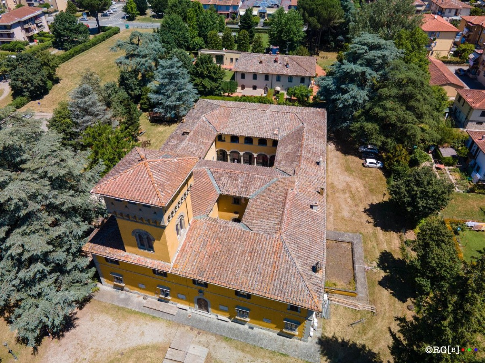

Percorso 7 · Culturale
Il Mugello dei grandi pittori
Giotto, Beato Angelico, Andrea del Castagno, Annigoni e i paesaggi che li hanno ispirati
A PiediIn BiciCon il Tuo Cane
A Piedi
- Durata
- 2/3 giorni
- Lunghezza
- 61 Km
- Difficoltà
- Media
- Dislivello
- 1220 Mt
VARIANTE
- Durata
- 2 giorni
- Lunghezza
- 28 Km
- Difficoltà
- Difficile
- Dislivello
- 2247 Mt
Traccia (60,6 km)Variante alternativa (28,0 km)PartenzaArrivo
Porta il percorso con te
Scarica la traccia per il navigatore o per un'app come Komoot, OsmAnd o Wikiloc.
Traccia GPX alternativaTraccia GPXScheda completa su Orme del Mugello
Sentieri e cammini attraversati
- Cammini
- SOFT 7 - Via Degli Dei
- Sentieri CAI variante
- nr. 26 - nr. 00 - nr. 14 B
- Cammini variante
- Grande Escursione Appenninica - Sentiero Italia - SOFT 20 - Sentiero delle Foreste Sacre - Alta Via dei Parchi
Descrizione del percorso
Leggi il racconto di Orme del Mugello
Il percorso parte proprio da Borgo San Lorenzo (188 m), da piazza del Popolo. Attraversato il centro storico, con quel che ne rimane delle sue mura trecentesche e superata la Torre dell’Orologio e la Porta Fiorentina, si giunge in piazza Cavour. Non lontano dal centro storico è possibile visitare edifici storici di grande richiamo e monumenti evocativi come il monumento al cane Fido, in piazza Dante. Usciti dal Palazzo Municipale sulla destra si trova appunto il Monumento al cane Fido (Salvatore Cipolla, 1957), un meticcio vissuto a Luco di Mugello: divenne famoso perché, dopo la morte del padrone Carlo Soriani nel 1943, continuò a recarsi tutta la sua vita, per circa 14 anni, alla fermata dell’autobus, attendendo il ritorno del suo amato padrone.
Da qui si giunge in prossimità dell’argine del fiume Sieve, importante corso d’acqua che caratterizza tutto il basso Mugello e che arriva a sfociare, dopo un percorso di oltre 70 km, nel fiume Arno. Si percorre per intero la pista ecoturistica Sieve, che segue il fiume omonimo per 9 km, prima sulla sua sponda sinistra, in seguito in prossimità di Sagginale, superato il ponte di Annibale, sulla sponda destra del fiume. Il percorso ciclopedonale è caratterizzato dalla presenza di numerosi ponti che prendono nome dai fossi che vengono superati. Arrivati a Ponte a Vicchio (170 m), è possibile prendersi una pausa lungo la riva della Sieve.
Si attraversa il ponte di pietra e dopo 1 km facciamo il nostro ingresso nel cuore di Vicchio (200 m). Le origini del paese risalgono al Medioevo, quando il borgo si sviluppò come importante presidio lungo le rotte controllo delle vie di comunicazione e fu fortificato nel XIV secolo. Le mura e le torri che un tempo proteggevano il borgo oggi lasciano spazio a un'atmosfera più tranquilla, ma ancora si respira l'antico fascino del passato.
Vicchio è famoso soprattutto per aver dato i natali a due figure fondamentali dell'arte e della cultura italiana:
Giotto di Bondone (1267-1337): il grande maestro della pittura medievale nacque nelle vicinanze, nella località di Vespignano. Oggi, una casa-museo celebra la vita e l'opera di Giotto, considerato il precursore del Rinascimento. Beato Angelico (1400-1455): un altro illustre figlio di Vicchio, Fra Angelico, è noto per le sue meravigliose opere pittoriche, molte delle quali decorate da un profondo senso di spiritualità.Proseguendo per via Cavour, in prossimità del cimitero, si svolta a sinistra in direzione Arsella e dopo poche centinaia di metri si inizia un lungo percorso ad anello che ci porterà a scoprire Casole (300 m) dove si presume abbia avuto i suoi natali il pittore Beato Angelico. Nella Casa Natale del Beato Angelico nacque Guido di Pietro, detto appunto Beato Angelico, uno dei più grandi pittori del primo Rinascimento. La casa, costruita in pietra nel XIV secolo, conserva il ricordo della sua infanzia prima del trasferimento a Firenze, dove entrò nel convento domenicano di San Domenico a Fiesole e iniziò la sua carriera artistica e spirituale. Nato tra il 1395 e il 1400, Guido di Pietro prese il nome di Fra' Giovanni da Fiesole e fu chiamato Beato Angelico per la profonda spiritualità delle sue opere. Il suo stile innovativo unisce realismo e misticismo, dando vita a capolavori come gli affreschi del Convento di San Marco a Firenze, la Cappella Niccolina in Vaticano e il Giudizio Universale. La casa natale rappresenta il punto d’inizio di un percorso straordinario che trasformò un giovane contadino in un maestro del Rinascimento.
Da questo punto è possibile percorrere la VARIANTE del cammino che porterà a scoprire altri due artisti e i loro luoghi: Pietro Annigoni e Andrea del Castagno.
VARIANTE
La salita verso le vette è lunga e costante. In pochi chilometri si raggiungono i quasi 1200 metri sul livello del mare del Monte Peschiena. Passando per rigogliosi boschi si giunge al Passo del Muraglione (907 m). Il percorso nasconde una piccola sorpresa prima di arrivare a Castagno d’Andrea; poco distante dal sentiero principale, non appena superata località il Casone, è possibile imbatterci nella Cascata di Calabuia. Il nome "Calabuia" sembra derivare dal fatto che la cascata è orientata a settentrione e immersa in un bosco fitto, risultando spesso in ombra, anche durante le ore più calde del giorno. Questo crea un'atmosfera fresca e misteriosa, perfetta per chi cerca un rifugio dalla calura estiva e un contatto diretto con la natura più selvaggia. La cascata è composta da due salti principali, che si gettano in una pozza cristallina, e da alcuni salti minori che contribuiscono a creare un gioco d’acqua suggestivo e affascinante. Una delle caratteristiche più interessanti di questo spettacolo naturale è la formazione di una cavità circolare, simile a una "marmitta dei giganti", che si è creata grazie all'erosione delle rocce. Questa formazione è un vero e proprio capolavoro della natura, che aggiunge un ulteriore elemento di fascino a un luogo già straordinario.
Per poter ammirare la cascata nella sua interezza e in particolare il salto superiore, è necessario risalire lungo il sentiero che la circonda. Il percorso, pur essendo facilmente accessibile, presenta alcuni tratti ripidi che richiedono attenzione, soprattutto se il terreno è bagnato o scivoloso. Chi affronta questo cammino, però, viene premiato con una vista spettacolare sulla cascata e sull'intero paesaggio circostante, che regala panorami mozzafiato. Il sentiero è immerso in un bosco di faggi, abeti e castagni che offrono ombra e frescura, creando un'atmosfera rilassante e rigenerante durante tutto l’anno. Siamo ormai in prossimità di Castagno d’Andrea.
Castagno d’Andrea è un suggestivo borgo montano nel comune di San Godenzo situato ai piedi del Monte Falterona, nel cuore del Parco Nazionale delle Foreste Casentinesi. La sua posizione privilegiata regala panorami spettacolari e una natura rigogliosa, oltre alla vicinanza alle sorgenti dell’Arno. A circa 750 metri di altitudine, il paesaggio è dominato da boschi di faggi e castagni secolari. Il borgo deve il suo nome al pittore rinascimentale Andrea del Castagno (1421-1457), nato qui nel XV secolo. La sua storia affonda le radici nel Medioevo ed è strettamente legata alla Repubblica Fiorentina. Durante la Seconda Guerra Mondiale, Castagno d’Andrea si trovò lungo la Linea Gotica, diventando teatro di eventi bellici.
Andrea del Castagno fu un artista innovativo, celebre per la potenza espressiva e la straordinaria resa prospettica delle sue opere, tra cui Il ciclo degli Uomini e Donne Illustri (Uffizi), L’Ultima Cena (Sant’Apollonia) e San Giuliano e la Maddalena (Museo dell’Opera del Duomo). Il borgo lo celebra con il Centro d’Interpretazione Andrea del Castagno, che ne racconta la vita e l’arte.
Anche Pietro Annigoni (1910-1988), celebre ritrattista noto per i dipinti della Regina Elisabetta II, trovò ispirazione a Castagno d’Andrea, dove trascorse lunghi periodi. Nella Chiesa di San Martino si può ammirare un suo crocifisso affrescato, esempio della sua intensa spiritualità. Un aneddoto racconta che amava isolarsi nei boschi per dipingere, portando con sé solo l’essenziale.
Il poeta Dino Campana, nelle sue peregrinazioni attraverso l’Appennino, trovò ispirazione nei paesaggi di Castagno d’Andrea, che influenzarono profondamente la sua poesia.
Il borgo è una delle porte d’accesso al Parco delle Foreste Casentinesi, con sentieri che conducono alle sorgenti dell’Arno e al Monte Falterona. La cucina locale, semplice e genuina, ha come protagoniste le castagne, utilizzate in piatti tradizionali come castagnaccio e polenta dolce. Castagno d’Andrea è dunque un luogo in cui arte, storia e natura si intrecciano, offrendo un’esperienza autentica nel cuore dell’Appennino. Che si tratti di scoprire l’eredità di Andrea del Castagno, ammirare l’opera di Annigoni, esplorare i sentieri poetici di Campana o assaporare le specialità locali, questo borgo regala un viaggio affascinante nella cultura toscana.
Chiudendo l’anello tra le campagne vicchiesi, per chi non avesse scelto di percorrere la variante, si ritorna in direzione del paese passando per il lago di Montelleri. Passeggiando per il centro storico si può incontrare una statua in bronzo raffigurante Giotto con tavolozza e pennelli, un omaggio suggerito da Carducci durante una visita agli amici. Al Beato Angelico è dedicato il Museo di Arte Sacra e Religiosità Popolare, che conserva opere d’arte provenienti da edifici religiosi locali, con artisti illustri come Francesco Furini, Taddeo Gaddi e Andrea della Robbia. Nel 2017, il Museo è stato protagonista dell’evento “SOTTO IL CIELO DI GIOTTO” per celebrare i 750 anni dalla nascita dell’artista, ospitando una tavola monumentale del giovane Giotto. Durante il Rinascimento, l’orafo e scultore Benvenuto Cellini acquistò una casa e un podere a Vicchio. Oggi, la Casa di Cellini, situata vicino a piazza Giotto, è un laboratorio moderno che ospita corsi, incontri ed esposizioni.
Lasciato Vicchio alle spalle si prosegue lungo saliscendi tra i campi sapientemente coltivati. Si giunge quindi a Vespignano (250 m), luogo dove è possibile visitare la Casa Museo di Giotto, uno spazio di memoria e creatività. Qui si possono ammirare un panorama mozzafiato, un orto botanico, i resti del castello di Vespignano e la chiesa di San Martino, dove uno degli otto figli di Giotto fu parroco. Si scende dunque verso il torrente Ensa che attraverseremo all’altezza del ponte di Cimabue, famoso pittore di fine duecento nonché maestro del celebre Giotto.
Si transita per strade secondarie fino a raggiungere la SP 551 che attraversiamo portandoci alle porte di Borgo San Lorenzo.
Giotto giovane pastore
La vita di Giotto è intrisa di racconti e leggende. Gran parte del merito per la diffusione di queste storie va attribuito allo storico del Rinascimento Giorgio Vasari, il quale trasformò narrazioni popolari in cronache storiche. Iniziamo con la prima leggenda, riportata proprio da Vasari e confermata da Ghiberti. Si racconta che Cimabue, pittore dell' epoca, abbia scoperto Giotto, allora giovane pastore, mentre disegnava le sue pecore su una pietra usando un carboncino improvvisato
Attraversiamo il paese in direzione Scarperia. La strada è quella tipica mugellana, con i suoi campi coltivati e le dolci colline che ne delimitano lo sfondo. In prossimità del borgo reso celebre dalla lavorazione dei coltelli, si punta verso Bosco ai Frati, uno dei più antichi complessi francescani della Toscana. Le sue origini risalgono all’epoca longobarda (VII-VIII secolo), quando era un piccolo eremo. Nel XIII secolo fu affidato ai frati francescani, che lo trasformarono in un centro di preghiera e ospitalità per i viandanti. Si narra che San Francesco d’Assisi vi abbia soggiornato durante i suoi viaggi. Nel XV secolo, grazie al sostegno di Cosimo il Vecchio de’ Medici, il convento fu completamente ristrutturato dall’architetto Michelozzo, divenendo un importante centro religioso e culturale. Frequentato dalla famiglia granducale, venne arricchito con opere d’arte e reliquie. Anche Cosimo I e i suoi successori continuarono a valorizzarlo, contribuendo alla sua crescita spirituale e artistica. Oggi il convento conserva un inestimabile patrimonio storico e artistico. Tra le opere più preziose spicca il Crocifisso ligneo di Donatello, straordinario esempio di espressività e intensità spirituale. Vi si trovano inoltre dipinti rinascimentali della scuola fiorentina, antichi codici miniati, arredi sacri e una biblioteca con manoscritti storici, testimoni della sua lunga tradizione.
Ci lasciamo il Convento alle spalle e entriamo nel bosco subito in prossimità dello stesso. In pochi chilometri, percorrendo il sentiero denominato SOFT 7, si giunge a San Piero a Sieve, tappa importante della famosa Via Degli Dei. Qui si passa inizialmente per Parco Antonio Berti, un’oasi verde dedicata alla memoria del celebre scultore nato qui nel 1904. Luogo di incontro per la comunità, ospita eventi culturali, concerti e il prestigioso Simposio Internazionale di Scultura, che trasforma il parco in un laboratorio artistico a cielo aperto.
Antonio Berti, allievo di Libero Andreotti, divenne uno dei ritrattisti più richiesti del Novecento, lavorando per sovrani e personalità illustri. Le sue opere, tra cui busti e monumenti celebri, riflettono il suo stile classico e raffinato. Il parco custodisce il suo spirito, unendo natura e arte in un museo a cielo aperto. Percorriamo le stradine del centro di San Piero a Sieve e ci dirigiamo verso il cimitero del paese per infine abbandonare le ultime case e dopo qualche chilometro raggiungiamo la Pista Ecoturistica Sieve, in prossimità appunto del fiume omonimo. Attraversiamo il ponte e il lungo viale, superata piazza Dante, ci porterà al punto di partenza del percorso.
Dormire, mangiare e prodotti lungo il percorso
Strutture ricettive (74)
- Affittacamere Via Degli Dei contatti
- Agriturismo Borgo Macereto contatti
- Agriturismo La Matteraia contatti
- Agriturismo Pian Barucci contatti
- Agriturismo Poggio Bartoli contatti
- Agriturismo Universal Harmony contatti
- Alla Corte Di Carla contatti
- Area Di Sosta Vecchio Ponte contatti
- BeB ASTIETO contatti
- BeB AURA contatti
- BeB CIRCUIT contatti
- BeB IL PITTORE contatti
- BeB IL PODERE DELLA PIAZZA contatti
- BeB KINGA contatti
- BeB LA CASA DI COSIMO contatti
- BeB LA PIEVE contatti
- BeB LE DUE VOLPI contatti
- BeB VACANZE IN MUGELLO contatti
- Borgo Di Serignana contatti
- Borgo! Hospitality contatti
- Camping Village Mugello Verde contatti
- Casa Torta contatti
- Casale San Giorgio contatti
- Castello Del Monsignore contatti
- Fattoria I Ricci contatti
- Fattoria La Topaia contatti
- Fattoria Le Case contatti
- Hotel Ebe contatti
- I Suoni Del Bosco contatti
- Il Borghetto contatti
- Il Borgo Di Elisa contatti
- Il Fangaccio contatti
- Il Gallo Birichino contatti
- IL MUGELLO BeB contatti
- Il Muretto contatti
- Il Podere Di Tullio contatti
- Il Poggio Alle Ville contatti
- Il Villino contatti
- La Colombaia contatti
- La Corte Di Ronzano contatti
- La Fattoria Del Farneto contatti
- La Felicina contatti
- La Germana contatti
- La Stazione Di Monta contatti
- La Terrazza contatti
- Locanda Degli Artisti contatti
- Locanda Di Alberi contatti
- MONSIGNOR DELLA CASA COUNTRY RESORT eSPA contatti
- Mugello Vacanze contatti
- My Home contatti
- Podere Capitignano contatti
- Podere I Lastri contatti
- Podere La Carbonaia contatti
- Podere Moiata-Fattoria Di Campestri contatti
- Poggio A Sieve contatti
- Poggio Savelli contatti
- Residences E Appartamenti- Villa Torricelli Il Giardinetto contatti
- Residenza Di Campagna Montelleri contatti
- Rupecanina contatti
- Santalvico contatti
- Short Term Rental In Borgo San Lorenzo contatti
- Short Term Rental In San Godenzo contatti
- Short Term Rental In Scarperia E San Piero contatti
- Short Term Rental In Vicchio contatti
- Sommavilla contatti
- Tenuta Le Tre Virtu' contatti
- Tenuta Mazzini contatti
- Tertulia coliving contatti
- Villa Campestri contatti
- Villa Dalia contatti
- Villa Di Pilarciano contatti
- Villa La Commenda Concordia contatti
- Villa Le Case contatti
- Villa Maltempo contatti
Aziende (21)
- Az. Agr. La BeeO Baita contatti
- Azienda Agricola Palazzo Vecchio contatti
- Azienda Agricola Poggio dei Roti contatti
- B.beb La Casa di Cosimo
- Bacco del Monte di Elena Bartalucci contatti
- Banco Fiorentino - Filiale di Borgo San Lorenzo
- Banco Fiorentino - Filiale di Luco di Mugello
- Banco Fiorentino - Filiale di Scarperia
- Banco Fiorentino - Filiale di Vicchio
- Borgo Macereto contatti
- Camping Village Mugello Verde contatti
- Farming
- Il Poggio alle ville di Raffaele Edlmann contatti
- IncorniciArti
- La Felce e il Mirtillo contatti
- Marchisoro Farm
- Monsignor della Casa Country Resort e Spa
- Poggio a Sieve - Casa Vacanze
- Società agricola Il Ponte di Trotta Rocco e Lompi Stefania s.s. contatti
- Tenuta Cafaggiolo contatti
- Tenuta Matteraia contatti
Il nome della struttura porta al suo sito web; "contatti" apre la scheda con telefono e mail sul portale turistico Mugello Toscana (per chi non ha un sito c'è solo quella). Le aziende portano ai loro siti. Sono tutte segnate anche sulla mappa.
Percorso, traccia e testi di Orme del Mugello, pubblicati con il loro permesso.